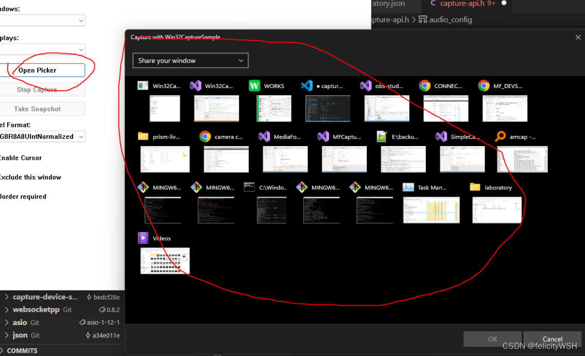
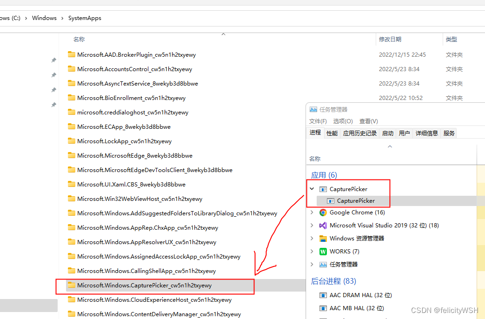

关键字：
capture minimized window
window thumbnail
IsIconic
==================== 问题背景 ======================
最小化的窗口，API GetClientRect 返回的窗口尺寸是0x0，故无法通过GetDC+BitBlt捕获到窗口画面。
但是 Agora/zoom/tencentMeeting 都可以拿到最小化窗口的缩略图。经确认这个程序并没有注入任何dll到目标窗口，且也没有临时显示最小化了的目标窗口。
如果用SHOW_RESTORE恢复最小化了的目标窗口，目标窗口是会收到WM_MOVE消息的，测试Agora/zoom/tencent抓最小化窗口的缩略图时，最小化的窗口并没有收到这个消息，事实上，目标窗口没有收到任何窗口消息。
小记：
- agora zoom 腾讯会议 在目标窗口最小化时， 都可以拿到窗口缩略图
- 拿到的该缩略图，画面和任务栏鼠标悬停时显示的缩略图一致（该缩略图并不是实时的，而是窗口最小化时刻的画面）
- 获取缩略图时，目标窗口没有收到任何窗口消息（SPY）
- 开始捕获窗口后，这几个视频会议软件 均可以恢复最小化了的窗口（即使目标窗口是管理员权限启动）
==================== 可用的方法 ====================
方法1（不推荐！）
WS_EX_LAYERED， SetLayeredWindowAttributes
方法2：
DWM接口，关键字：DwmRegisterThumbnail，DwmUpdateThumbnailProperties
通过注入Dll + hook API（DwmRegisterThumbnail）的方式验证zoom进程，发现其就是用dwm捕获最小化窗口画面的。
在zoom的窗口选择界面，所有目标窗口的画面捕获和刷新 都是用的dwm，zoom每次调用dwmRegister 传入的dest HWND都是同一个句柄，且刚刚就是窗口选择界面的顶层窗口句柄，
目标窗口最小化和restore期间，zoom没有调用过dwmUnregister，应该是调用了dwmUpdate(尚未验证)。
方法3：
WGC接口，关键字：GraphicsCapturePicker.PickSingleItemAsync (是系统提供的子进程界面)
================ DWM接口 ========================
关键字：
DWM（桌面窗口管理器）API , 可以实现获取目标窗口的缩略图（即使目标窗口是最小化）
DWM API应用之缩略图_老狼主的博客-CSDN博客_c++ dwm api
Windows 使用 DuiLib 显示屏幕和窗口缩略图_12194415的技术博客_51CTO博客
DwmRegisterThumbnail function (dwmapi.h) - Win32 apps | Microsoft Learn
DwmUpdateThumbnailProperties function (dwmapi.h) - Win32 apps | Microsoft Learn
DwmUnregisterThumbnail function (dwmapi.h) - Win32 apps | Microsoft Learn
注意：
1. 一旦用DwmRegisterThumbnail和DwmUpdateThumbnail，绑定了缩略图关系后，只要不调用DwmUnregister，源窗口的画面就会被系统持续自动更新到目标窗口，不需要手动去刷新画面。
2. 一旦源窗口销毁了，目标窗口上的画面也就没有了（系统会自动清空）
3. 源窗口和目标窗口 都必须是顶层窗口，且目标窗口必须是当前进程的窗口
4. UWP窗口的源窗口句柄，需要设置为parent host句柄（EnumWindows的回调形参HWND就是parent句柄）
- #include <dwmapi.h>
- #pragma comment(lib,"Dwmapi.lib")
-
- HRESULT RegisterThumbWindow(HWND hWndSrc, HWND hWndDst)
- {
- HTHUMBNAIL thumbnail = NULL;
- HRESULT hr = DwmRegisterThumbnail(hWndDst, hWndSrc, &thumbnail);
- if (FAILED(hr))
- return hr; // 如果窗口句柄不存在 或传入了非顶层窗口的句柄 此处会出错
-
- RECT dest;
- GetClientRect(hWndDst, &dest);
-
- DWM_THUMBNAIL_PROPERTIES dskThumbProps;
- dskThumbProps.dwFlags = DWM_TNP_RECTDESTINATION | DWM_TNP_VISIBLE | DWM_TNP_SOURCECLIENTAREAONLY |DWM_TNP_OPACITY; // 标识哪些字段已经设置了有效值
- dskThumbProps.fSourceClientAreaOnly = FALSE;
- dskThumbProps.fVisible = TRUE;
- dskThumbProps.rcDestination = dest;
- dskThumbProps.opacity = 255;
-
- hr = DwmUpdateThumbnailProperties(thumbnail, &dskThumbProps);
- if (FAILED(hr))
- OutputDebugStringA("error");
-
- // DwmUnregisterThumbnail(thumbnail);
- return hr;
- }
-
- void CMFCApplication4Dlg::OnBnClickedButton1()
- {
- // 要把缩略图显示在这个窗口 注意：根据MSDN这个窗口必须是顶层窗口，否则返回错误E_INVALIDARG
- // 注意 这个句柄 必须是【当前进程】的窗口句柄
- HWND hwndDestination = m_hWnd;
-
- // 想捕获的源窗口 这个句柄也必须是顶层窗口句柄，UWP窗口在此处需要设置为parent host句柄
- HWND hwndSource = (HWND)0X004E0286;
-
- RegisterThumbWindow(hwndSource, hwndDestination);
- }
===================== WGC接口 =====================
这个项目，点击按钮“Open Picker”， 会弹出一个窗口 用来显示所有窗口 包含最小化窗口的缩略图。
但是这个弹出窗口是系统的，主程序退出后 这个窗口都还在。如果捕获窗口利用的是WGC技术，则可以完全复用系统的这个picker窗口。

这个弹出的子窗口，实际上是系统提供的独立进程：

================= WS_EX_LAYERED ===================
技术点：临时把窗口显示出来（SW_RESTORE），捕获到一帧窗口画面后，再把窗口恢复最小化。
显示窗口之前，需要做如下准备：
1. 给目标窗口增加扩展属性 WS_EX_LAYERED（增加了这个属性 才可以设置窗口透明度）。
2. 用API设置窗口的透明度为透明 （让用户感知不到窗口被显示了）SetLayeredWindowAttributes / GetLayeredWindowAttributes。
3. 临时关闭系统的最大化和最小化的动画效果 animation（否则临时restore最小化的窗口时 系统有动画效果 被用户感知）。
恢复了最小化的窗口 抓取到窗口画面后，再恢复以上几个属性（有些窗口可能之前就有透明度，要注意保存以前的值）
注意：
以上操作，如果是UWP窗口，需要设置的HWND对象是外层的host窗口。
TODO：
尚未验证过如果目标窗口是管理员权限进程的，如下API设置layered透明度是否还能成功？
- HWND hWnd = 0;
- if (pTemp->pObject->bIsUWP) {
- hWnd = pTemp->pObject->hParent; // 如果是UWP窗口 需要使用host窗口
- } else {
- hWnd = pTemp->pObject->hActual;
- }
-
- if (IsWindow(hWnd)) {
- if (IsIconic(hWnd)) {
- ModifyStyleEx2(hWnd, 0, WS_EX_LAYERED); // 增加了这个属性 才可以设置半透明
- SetLayeredWindowAttributes(hWnd, 0, 155, LWA_ALPHA); // 设置整个窗口透明
- // TODO： 临时关闭系统的最大化和最小化的动画效果
- ShowWindow(hWnd, SW_RESTORE); // 显示窗口
-
- // TODO: capture window video
-
- // TODO: 移除layered属性，恢复最小化状态。
- // 注意：需要确认之前是否有layer属性，以及对应透明度。GetLayeredWindowAttributes
- ShowWindow(hWnd, SW_MINIMIZE);
- }
- }
备注：
显示最小化窗口时，如果目标窗口是管理员权限运行，而自己的进程不是，则使用ShowWindow则会收到last error = 5。此时想显示最小化的目标窗口，应该用如下两种方法之一。
- // 方法1
- // [此功能不适用于一般用途。它可能会在后续版本的 Windows 中更改或不可用。]
- // 根据微软注释 这个API不建议使用了。
- SwitchToThisWindow(hWnd, TRUE)
-
-
- // 方法2 （推荐使用）
- PostMessage(hWnd, WM_SYSCOMMAND, (WPARAM)SC_RESTORE, 0)


 524
524


 被折叠的 条评论
为什么被折叠?
被折叠的 条评论
为什么被折叠?
 到【灌水乐园】发言
到【灌水乐园】发言